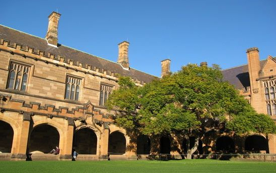
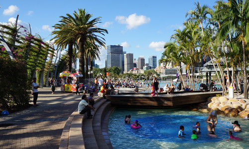
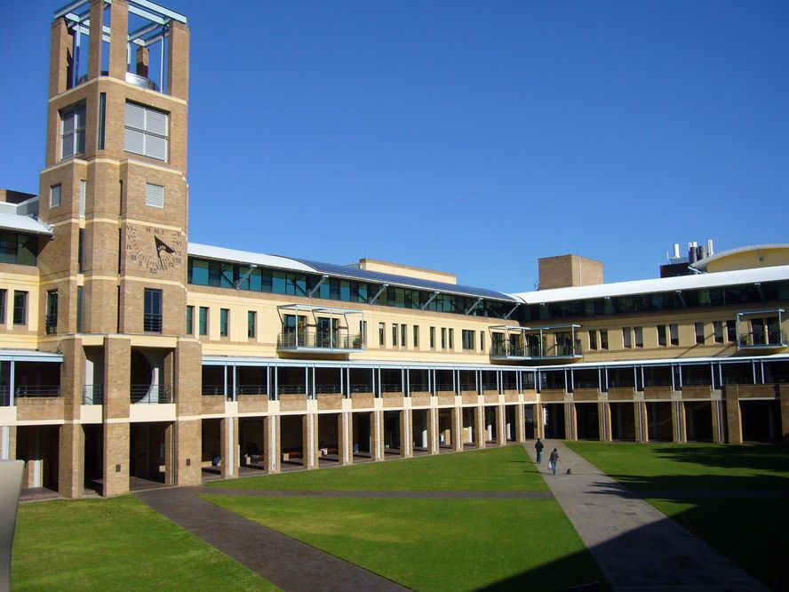
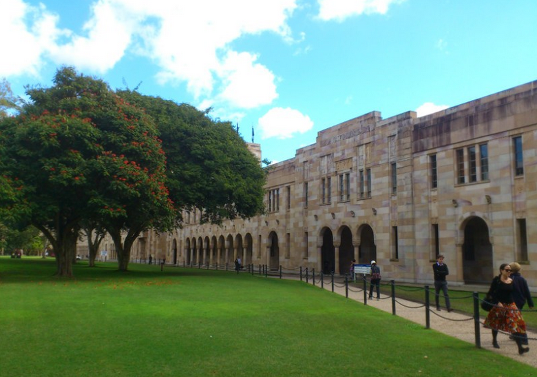

昆士兰大学 The University of Queensland 学校概况 昆士兰大学建立于1910年，是澳大利亚最老的的大学之一，是澳洲的一流大学，它招收海外学生已有50多年的历史。昆士兰大学在产业资助研究和竞争基金方面是澳大利亚…
昆士兰大学 The University of Queensland
学校概况昆士兰大学建立于1910年，是澳大利亚最老的的大学之一，是澳洲的一流大学，它招收海外学生已有50多年的历史。昆士兰大学在产业资助研究和竞争基金方面是澳大利亚最好的三所大学之一，教学、研究被认为国际一流。

昆士兰大学主校区在布里斯班市的St.Lucia，在Ipswich和Gattpon设有分校区，在全州各地有40个专科中心，包括北昆士兰地震观测站和大堡礁的一个海洋研究站。昆士兰大学主校区距离布里斯班中心商业区仅7公里，它具有世界一流的学习和研究环境，可以有更多的教育和社会活动机会，了解有影响力的多文化背景的布里斯班市。

许多见多识广的海外留学生对布里斯班及周边环境已经熟知。昆士兰闻名世界的黄金海岸和乡村风光使布里斯班成为很受欢迎的度假胜地。从这座现代化的亚热带城市布里斯班乘飞机只要一小时就可到达澳大利亚历史悠久的暗礁群及广阔的沙漠。
此外，昆士兰大学的图书馆在昆士兰州是最大的。它在路西亚、加顿和爱普思维奇三个校园及布里斯班教学医院分布着13个分馆。从每一个分馆、或从家里及办公室的计算机上均可得到信息服务。图书馆提供一系列优良的设备和服务，包括目录、数千种电子刊物、250个网络数据库和总数为2百多万种因特网资源。所有的资源通过图书馆的因特风时刻都可以得到。

荣誉和特色
·昆士兰大学位居澳大利亚的八大名校前列
·昆士兰大学连续多年被亚洲周刊评为亚太地区最好的大学之一
·在澳大利亚政府对各大学就教学、研究、校园服务三项指标进行的质量评比中名列前茅
·昆士兰大学提供的学位获得“澳大利亚资格认证体制”的认可
·昆士兰大学拥有昆士兰州最大的图书馆，内有200万册藏书和丰富的多媒体信息资源，每位昆士兰大学的学生都可以免费使用互联网
·学校提供400多种专业5500多种本科与研究生课程

专业设置
专业：环境管理，食品学，项目管理，商务，企业经济学，商业，经济学研究，发展规划，区域发展，应用健康科学，应用科学，生物工程学，文学，传媒，教育学，新闻，信息技术，信息技术学
入学要求
本科英语成绩要求：雅思 6.5分（单项不低于6.0分）
硕士英语成绩要求：雅思 6.5分（单项不低于6.0分
本文由 辽宁留学服务有限公司 编辑发布，内容仅供留学规划参考，未经授权请勿转载。
政策法规、招生简章与项目费用等信息具有时效性，请以各国官方机构及院校最新发布为准；如需核实详情，请联系顾问。